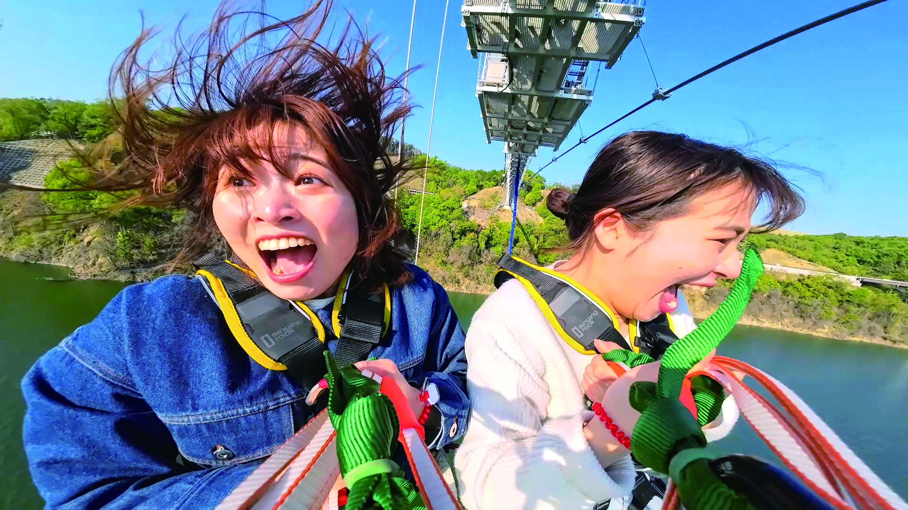

日本一長い
歩行者専用吊り橋
湖面からの高さ
足元は透ける
同時に橋上に
立てる設計容量
オープン約5ヶ月で
来場者10万人突破
「行けばよかった」ではなく「行ってよかった」に変わる体験が、ここにある。

STEP 01 — 橋のたもと
😬右岸側の主塔は高さ60m。下を見ると、吸い込まれそうな湖面。思っていた10倍、怖い。それでも——来た、やるぞ、という気持ちが同時に生まれる。

STEP 02 — 橋の中央部
😱格子状の床から、55m下の湖面が見える。風に吹かれると橋全体がゆっくり動く。「怖い！」と叫びたくなる。隣にいる人の手を、思わず握る。

STEP 03 — 渡り終えたとき
🌅420m歩き切ったとき、達成感が押し寄せる。ダム湖と山並みと空——何もない、だからこそ美しい景色。夜はレインボーに輝く。




虹色7色に輝くライトアップが橋を包む。
昼とはまったく別の景色が、湖面に映る。
日帰りでは帰れなくなる夜。
※夜間営業は季節・イベントにより開催日時が異なります。最新の開催情報は公式サイトまたはSNSをご確認ください。
「正直なめてた。でも橋の中央に来た瞬間、足がすくんだ。揺れる、透ける、怖い。でも渡り終えた達成感はすごかった。彼女と来て本当によかった。」
「高所恐怖症なのに行ってしまった。手が震えた。でも渡り終えたら泣きそうになった。景色より達成感が印象に残っている。また行きたい。」
「夜のライトアップがきれいすぎて言葉がなかった。橋が虹色に光って、湖面に映って。写真では伝わらない。行かないと絶対わからない景色だと思う。」
※体験者の声をもとに要約・掲載しています（Googleレビュー・じゃらん口コミ等より）
出発前日・当日は現地の天気と風速を必ずご確認ください。風速10m以上の場合、バンジー・スイング・クライムは中止となります。ブリッジウォークは雨天でも原則実施しています。
🌤️ 茨木市の天気予報を確認する ↗RESERVE NOW
来年の自分ではなく、今日の自分が行く。
GODA BRIDGEの空は、待っています。